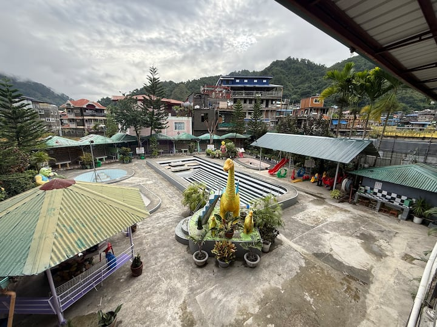

Your Refreshing Oasis in Samoki, Bontoc
Relax and unwind at Ab-abtana Resort, surrounded by the cool air and breathtaking mountain views of Bontoc, Mountain Province. Perfect for family day trips, swimming, picnics, and private gatherings.

Relax and unwind at Ab-abtana Resort, surrounded by the cool air and breathtaking mountain views of Bontoc, Mountain Province. Perfect for family day trips, swimming, picnics, and private gatherings.
We feature crystal-clear adult and kiddie swimming pools, cozy picnic cottages, barbecue grilling areas, and space for special events and celebrations.
Enjoy our refreshing pools surrounded by nature. Standard day-swimming and night-swimming rates apply with special discounts for kids, seniors, and PWDs.
We offer small, medium, and large open-air gazebos and traditional huts equipped with tables and benches for group gatherings and day outings.
Looking to stay longer? Reserve our overnight fan and air-conditioned rooms, or book the entire venue for private functions and family reunions.
Located in Barangay Samoki, Bontoc, Mountain Province. Just a short drive or tricycle ride across the river from Bontoc Town Proper.
Combine your pool day with a cultural visit to Samoki's famous traditional pottery craftmakers and local weavers, or take a day trip to nearby Maligcong Rice Terraces.
For cottage reservations, overnight inquiries, and exclusive bookings, call or text us at (+63) 9XX-XXX-XXXX or send a direct message on our official Facebook page.
Open daily from 8:00 AM to 9:00 PM for day swimming and cottage use. Overnight stay check-in begins at 2:00 PM.